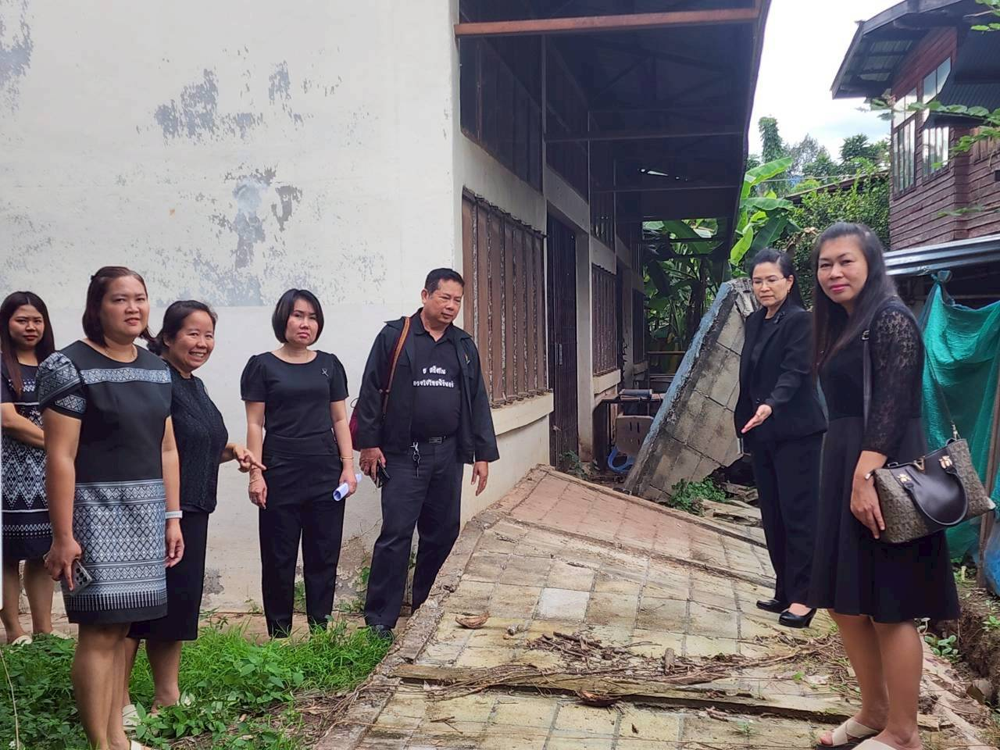
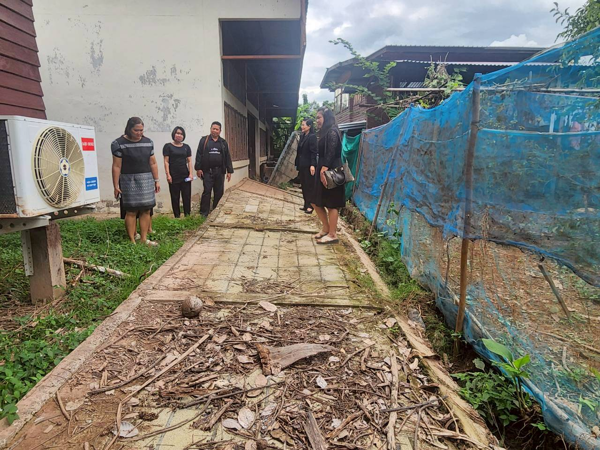
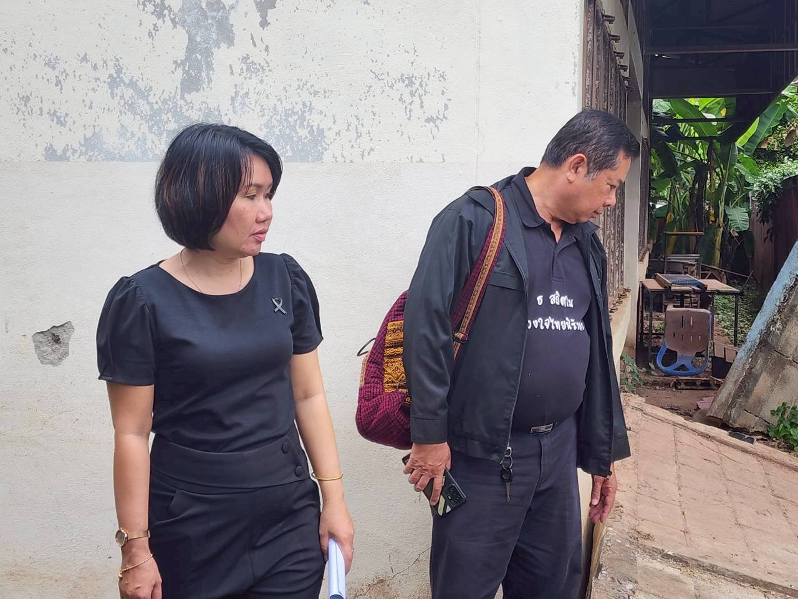
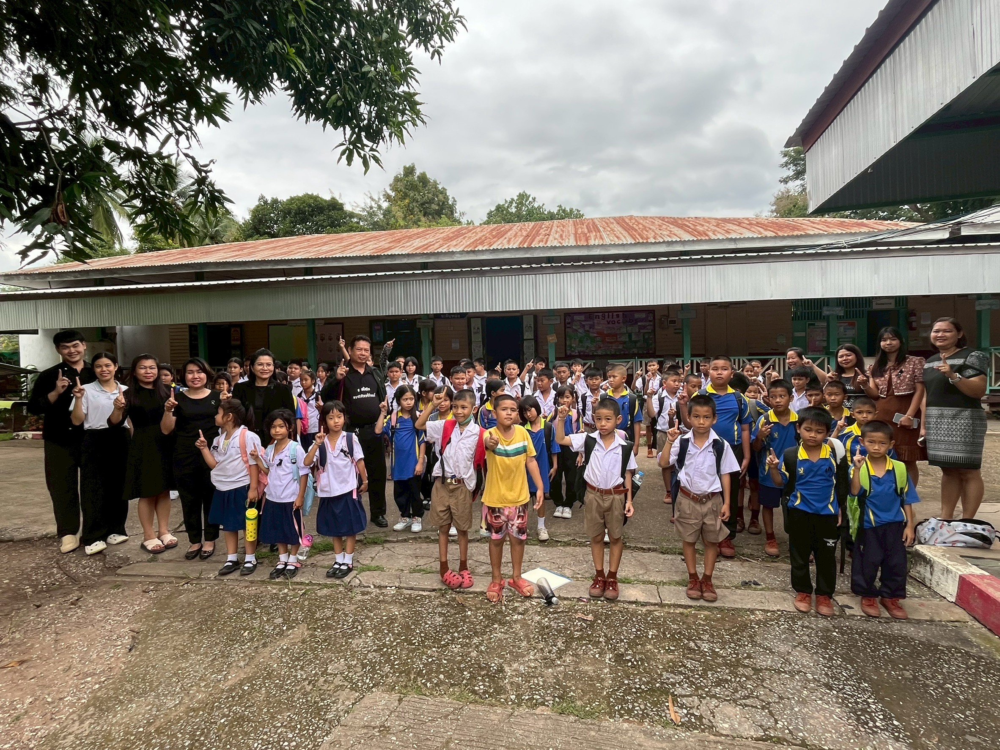
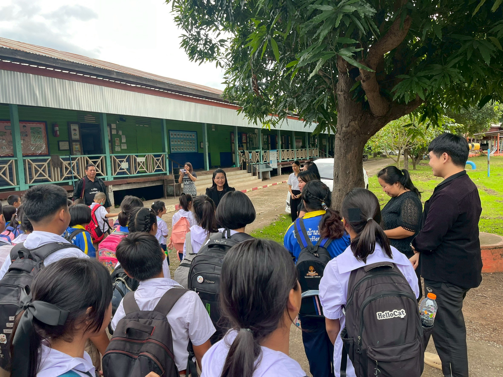
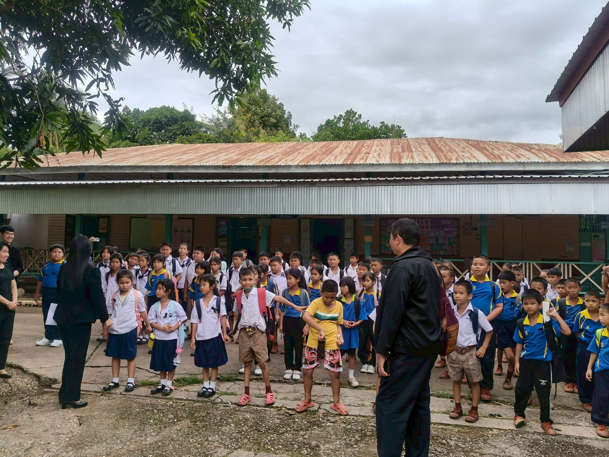

Executive Summary Dashboard
รายงานผลสัมฤทธิ์การปฏิบัติงานตามข้อตกลงในการพัฒนางาน (PA)
ปีงบประมาณ 2569
25
ชม. สอน/สัปดาห์
100%
ผ่านเกณฑ์ตัวชี้วัด
#73
รางวัลศิลปหัตถกรรม
ข้อมูลทั่วไปและประวัติการศึกษา
ชื่อ-นามสกุล:
นางสาววรัญญา นันชม
วุฒิการศึกษา:
ปริญญาตรี คอมพิวเตอร์ธุรกิจ
สถาบัน:
มหาวิทยาลัยราชภัฏอุตรดิตถ์
สังกัด:
สพป.อุตรดิตถ์ เขต 1
สัดส่วนภาระงานสอน
กระบวนการขับเคลื่อนคุณภาพผู้เรียน (PA)
01
PLAN (วางแผน)
วิเคราะห์สภาพปัญหาและออกแบบการเรียนรู้เชิงรุก (Active Learning)
02
DO (ปฏิบัติ)
จัดการเรียนรู้รายวิชาวิทยาการคำนวณ โดยใช้เทคโนโลยีดิจิทัล
03
CHECK (ตรวจสอบ)
วัดผลสัมฤทธิ์ผ่านระบบออนไลน์และแฟ้มสะสมผลงานดิจิทัล
04
ACT (สรุป)
รวบรวมข้อมูลเพื่อพัฒนาและสร้างนวัตกรรมการสอนที่ยั่งยืน
หลักฐานภาพกิจกรรมเชิงประจักษ์





